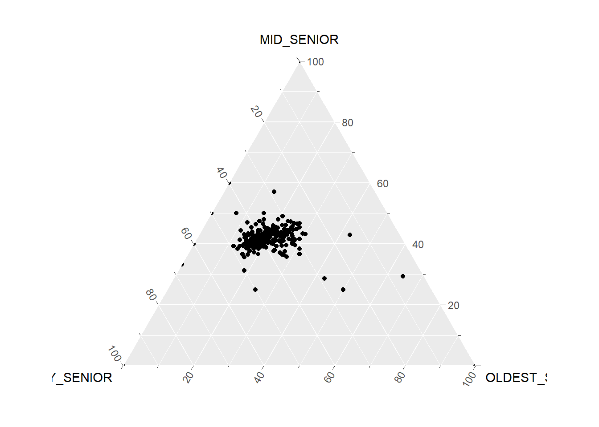
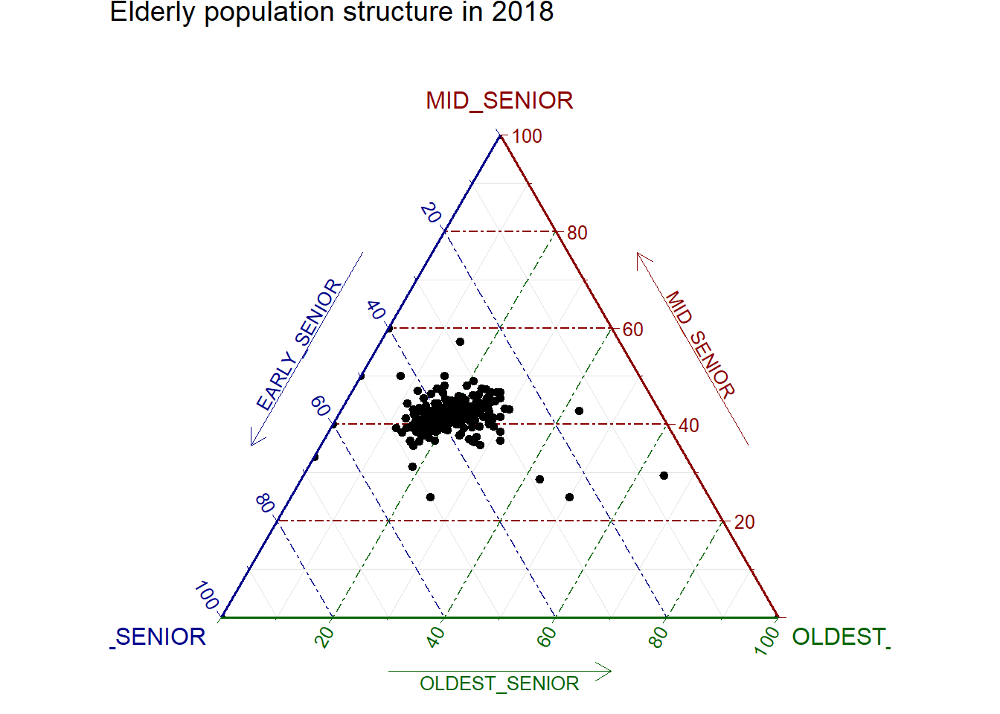

pacman::p_load(plotly, ggtern, tidyverse)Hands-on_Ex0501
13.2 Installing and launching R packages
13.3.2 Importing Data
#Reading the data into R environment
pop_data <- read_csv("data/respopagsex2000to2018_tidy.csv") 13.3.3 Preparing the Data
#Deriving the young, economy active and old measures
agpop_mutated <- pop_data %>%
mutate(`Year` = as.character(Year))%>%
spread(AG, Population) %>%
mutate(YOUNG = rowSums(.[4:8]))%>%
mutate(ACTIVE = rowSums(.[9:16])) %>%
mutate(OLD = rowSums(.[17:21])) %>%
mutate(TOTAL = rowSums(.[22:24])) %>%
filter(Year == 2018)%>%
filter(TOTAL > 0)13.4.1 Plotting a static ternary diagram
#Building the static ternary plot
ggtern(data=agpop_mutated,aes(x=YOUNG,y=ACTIVE, z=OLD)) +
geom_point()
#Building the static ternary plot
ggtern(data=agpop_mutated, aes(x=YOUNG,y=ACTIVE, z=OLD)) +
geom_point() +
labs(title="Population structure, 2015") +
theme_rgbw()
13.4.2 Plotting an interative ternary diagram
# reusable function for creating annotation object
label <- function(txt) {
list(
text = txt,
x = 0.1, y = 1,
ax = 0, ay = 0,
xref = "paper", yref = "paper",
align = "center",
font = list(family = "serif", size = 15, color = "white"),
bgcolor = "#b3b3b3", bordercolor = "black", borderwidth = 2
)
}
# reusable function for axis formatting
axis <- function(txt) {
list(
title = txt, tickformat = ".0%", tickfont = list(size = 10)
)
}
ternaryAxes <- list(
aaxis = axis("Young"),
baxis = axis("Active"),
caxis = axis("Old")
)
# Initiating a plotly visualization
plot_ly(
agpop_mutated,
a = ~YOUNG,
b = ~ACTIVE,
c = ~OLD,
color = I("black"),
type = "scatterternary"
) %>%
layout(
annotations = label("Ternary Markers"),
ternary = ternaryAxes
)Self Trying: Elderly population structure in 2018
elderly_profile_2018 <- pop_data %>%
mutate(Year = as.character(Year)) %>%
spread(AG, Population) %>%
mutate(EARLY_SENIOR = rowSums(.[17:17], na.rm = TRUE)) %>%
mutate(MID_SENIOR = rowSums(.[18:19], na.rm = TRUE)) %>%
mutate(OLDEST_SENIOR = rowSums(.[20:21], na.rm = TRUE)) %>%
mutate(TOTAL_ELDERLY = EARLY_SENIOR + MID_SENIOR + OLDEST_SENIOR) %>%
mutate(OLDEST_SHARE = OLDEST_SENIOR / TOTAL_ELDERLY) %>%
filter(Year == "2018") %>%
filter(TOTAL_ELDERLY > 0)Plotting a static ternary diagram
ggtern(
data = elderly_profile_2018,
aes(x = EARLY_SENIOR, y = MID_SENIOR, z = OLDEST_SENIOR)
) +
geom_point()
#Building the static ternary plot
ggtern(
data = elderly_profile_2018,
aes(x = EARLY_SENIOR, y = MID_SENIOR, z = OLDEST_SENIOR)
) +
geom_point() +
labs(title="Elderly population structure in 2018") +
theme_rgbw()
Plotting an interative ternary diagram
# reusable function for creating annotation object
label <- function(txt) {
list(
text = txt,
x = 0.1, y = 1,
ax = 0, ay = 0,
xref = "paper", yref = "paper",
align = "center",
font = list(family = "serif", size = 15, color = "white"),
bgcolor = "#b3b3b3",
bordercolor = "black",
borderwidth = 2
)
}
# reusable function for axis formatting
axis <- function(txt) {
list(
title = txt,
tickformat = ".0%",
tickfont = list(size = 10)
)
}
ternaryAxes <- list(
aaxis = axis("Early Senior"),
baxis = axis("Mid Senior"),
caxis = axis("Oldest Senior")
)
plot_ly(
data = elderly_profile_2018,
a = ~EARLY_SENIOR,
b = ~MID_SENIOR,
c = ~OLDEST_SENIOR,
color = ~OLDEST_SHARE,
colors = c("#D6EAF8", "#2E86C1", "#154360"),
type = "scatterternary",
mode = "markers",
marker = list(size = 7, opacity = 0.8)
) %>%
layout(
annotations = label("Elderly Population Structure in 2018"),
ternary = ternaryAxes
)